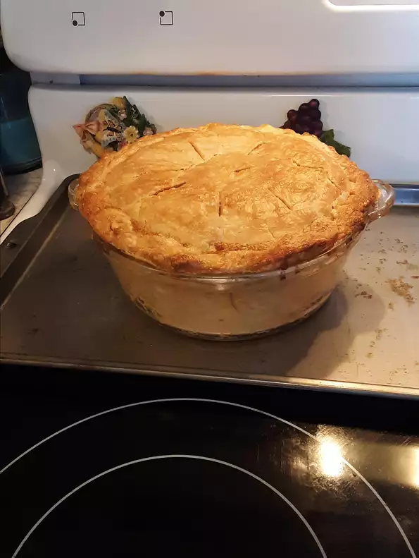

Chicken Pie

Easy Baked Chicken pie
This pie is easy to make and is wonderful comfort food. This is my husband's favorite meal.
Ingredients
- 2 (9 inch) pie shell
- 1 (10.75 ounce) can condensed cream of chicken soup
- 1 (8 ounce) package cream cheese, softened
- ½ (16 ounce) package frozen mixed vegetables, thawed
- 3 cups cooked, diced chicken meat
Steps
- Preheat oven to 425 degrees F (220 degrees C).
- In a large mixing bowl combine soup and softened cream cheese. Mix until thoroughly blended. Stir in vegetables and chicken.
- Pour chicken mixture into pastry-lined pie pan. Cover with top crust. Seal and cut steam vents in top. Cover edges of crust with aluminum foil to prevent overbrowning.
- Bake in preheated oven for 35 to 40 minutes. Remove foil halfway through baking to allow edges of crust to brown. Check often late in cooking time to ensure crust is not burning.